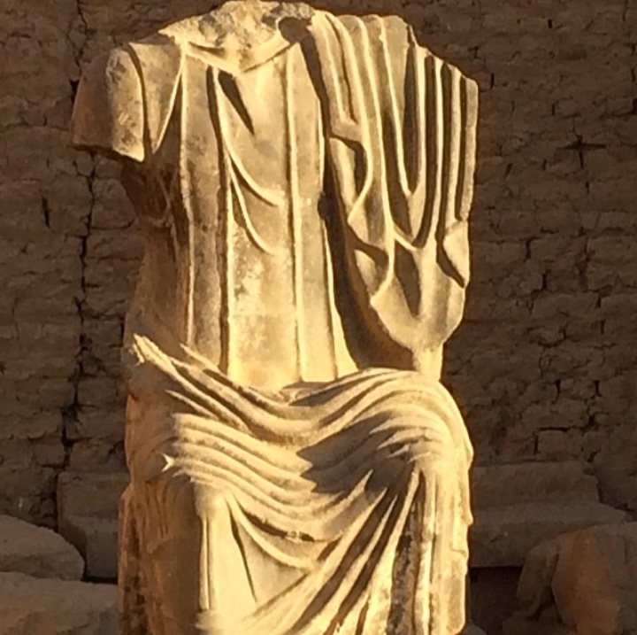
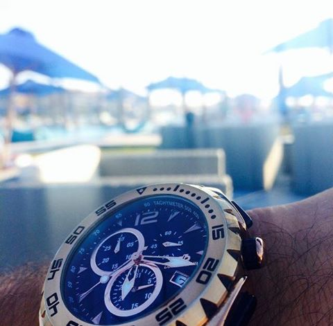

Intro

Hello, Let us get straight to the point, I am a software engineer, whom fell in love with the beauty of teaching
the machine to be taught on its own, to figure out the optimal solution without us interfering.
By the way, check out my awesome work -in my humble
opinion-.
Work

Full-time jobs:
After graduation, I started studying and applying for software development engineer. Landing my first job on
July 2017, in ECS-SAP, working there for a year as a full stack developer.
Part-time jobs:
- [From Sep 2016 to May 2017] Junior Teaching assistant(JTA) at The German University in Cairo (GUC), Cairo, Egypt. Teaching web design and Arduino for interactive marketing
- [From Feb 2016 to Jan 2017] Research Assistant (RA) Dr. Amir R. Ali - in Aratronics Lab-, German University in Cairo
- [From July 2015 to Oct 2015] Operations manager at Go! Padel, Katameya Heights, Cairo, Egypt
- [From March 2014 to July 2014] Poet at Kelmetna Magazine, Cairo, Egypt.
- [From Jan 2011 to May 2012] Junior Teaching assistant(JTA) in a private teaching center, teaching Arabic Language, Cairo, Egypt.
I have also had my share of freelancing jobs:
- Buckette, Partnership, me handling the tech part, developing Backend and Admins' panel.
- Talents Arena, developing website both frontend and backend.
- Auscene, I developed the website -desktop version- working with Curved
Space.
- Talents Cracker, it was one month job, optimizing website display
for handheld devices, as well as, revamping few pf their pages.
- Monyay, website both frontend and backend.
- IRIS Detection, android apps detects
the human iris and stops sound and timer.
Side Projects:
Technology Stacks:
- Basic web design and development, I prefer using HTML5, CSS, JavaScript, Bootstrap, Bootstrap-Tour
- For backend projects, I used Java, C#, ASP.net, MEAN stack
- For database manipulation & querying SQL, T-SQL
- During Iris detection project, using Java, OpenCV
- Machine Learning realm, I fell in love with Python
Check out my CV
Send me an email
About

I have a dream
I am a software engineer, as I mentioned in the intro section. And, I just want to add to
this universe before leaving it.
Education
Languages
I speak only 2 languages so far,
- Arabic -mother tongue-
- English -Fluently-
- Io provo paralare italiano...
Hobbies
- Cross fit
- Poetry -Writing & Reading-
- Photography -even though, I do not know how to take a photo like a pro, but working my way through-